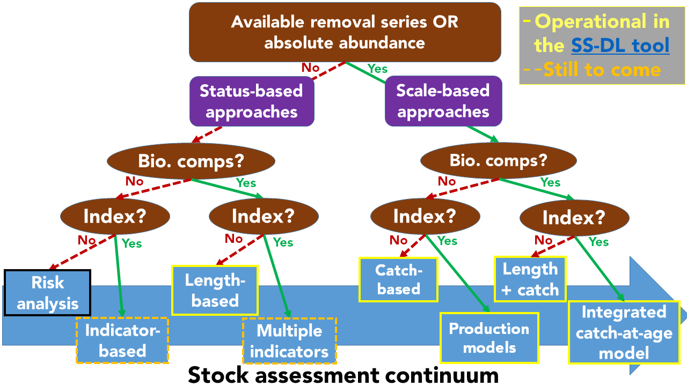

The SS-DL is an integrated analysis framework that includes a variety of data-limited modeling approaches. Below is a list of those that are currently implemented:
⁕ Sustainable catch estimators (i.e., catch-only models) using the Simple Stock Synthesis (SSS: Cope 2013)
⁕ Extended Simple Stock Synthesis for MLE (XSSS-MLE) estimator of sustainable catch
⁕ Length-only (SS-LO) estimation of relative biomass, SPR and F. This is similar to length-only approach such as LB-SPR and LIME
⁕ Length + catch-based (SS-CL) estimation of biomass, relative biomass, SPR and F and catch limits (Rudd et al. 2021).
⁕ Age-structure surplus production model (SS-SP) estimation of biomass, relative biomass, SPR and F and catch limits
⁕ Statistical catch at age model (catches, indices and length and/or age compositions) estimation of biomass, relative biomass, SPR and F and catch limits (Methot and Wetzel 2013)
STILL TO COME: Extended Simple Stock Synthesis using AIS (XSSS-AIS) estimator of sustainable catch; multiple indicator approaches
